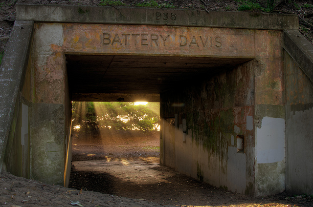

10 beaches to visit in:
San Francisco
Discover the beautiful beaches hidden in San Francisco
Click Here to Start Your Beach Discovery
Baker Beach
Baker Beach
-
Famous Spot
Baker Beach is a large popular beach not far from the Golden Gate Bridge in San Francisco. On sunny weekends both parking lots could be full and all the spaces along the entrance roads too. This popular spot is one of the many beaches in the Golden Gate National Recreation Area.
-
Graffiti Structure
Just north of the main parking lot is the Battery Chamberlin, a large historic military gun installation that was built in 1904. It is worth checking out especially if you have kids. Be aware as you explore the north end of Baker Beach because North Baker Beach is a clothing-optional area. All of Baker Beach is an unsafe swimming area because of cold water and frequent rip currents in the surf.
Marshall Beach
Marshall Beach
Marshall Beach is a long narrow secluded beach that stretches from the Golden Gate Bridge south to North Baker Beach.
Because of the seclusion below steep cliffs it is one of the best-known clothing-optional beaches in San Francisco.
Access to the beach is difficult to find. There are trails along the bluff that descend long windy paths and stairways.
Park at the Golden Gate Overlook parking lot near Battery Godfrey at the end of Langdon Court just off Lincoln Boulevard
south of the bridge. Then hike the trail south until you find the safe path down (see our map link above).
At high tide the beach can be totally wet so consult tide charts before you go.
Marshall’s is part of the Golden Gate National Recreation Area.
Swimming is not safe here due to cold temps and rip currents.
Even if this type of beach isn’t your cup of tea, it is worth stopping at the overlook for the views of the bridge and
the Marin Headlands and to explore the several military structures nearby.
Funston Beach
Funston Beach
-
Trail
Fort Funston is the southernmost beach on the Pacific Coast side of San Francisco and is part of Golden Gate National Recreation Area. Fort Funston is known for windy conditions and the hang-glider platform at the edge of the bluff. If the forecast calls for high wind, go to another local beach. There are hiking trails along the bluff and two routes down to the beach. The southern route to the beach has many steps and a sand ladder and is more direct. If you take this route, going left on the sand takes you onto Phillip Burton Beach and going right takes you below the hang-glider launch in Fort Funston.
-
Graffiti Structure
Walking north (right) makes a great loop as you can return on another beach access and take the Sunset Trail back to the car. On this loop you’ll discover a graffiti-covered concrete structure at beach-level that has an artsy golden dog man on it. Keep your eyes open for sand dollars on the beach and fossils in the rocks on this route.
-

Battery Davis
The trail passes behind Battery Davis, a World War II military installation which has two tunnels you can walk through. Back at the parking lot there is a wooden observation platform that offers stunning views of the beach and the ocean. Dogs can be walked on leash in most parts of the park. Bikes and horses are also allowed on trails in the park but consult maps before heading out. Look for the parking lot for Fort Funston on the southbound lanes of Skyline Boulevard just south of John Muir Drive.
Rodeo Beach
Rodeo Beach
Rodeo Beach is a wide sandy beach on the sand spit that separates Rodeo Lagoon from Rodeo Cove on the west side of
the Marin Headlands in Golden Gate National Recreation Area. The beach is dark colored and made up of small pebbly
stones in brown, red, green, and blue. It’s a popular spot as it is close to San Francisco and easy access for both
locals and tourists. Walk to the south end of the beach to see rocks in the surf that are frequently photographed.
Bird Rock is offshore and has a small arch in the center. With binoculars you can see the birds on the rock but Rodeo
Lagoon is the best spot for birdwatching. To get here follow signs to Marin Headlands Visitors Center and then turn
west on Bunker Road. Then look for signs to the Rodeo Beach parking lot and picnic area. From the parking area trails
go north along the bluff to coastal overlooks and south to various military batteries and South Rodeo Beach.
Kirby Beach
Kirby Beach
-

Picture View
Kirby Cove Beach is at the base of the Marin Headlands north of the entrance to San Francisco Bay. The view from the beach is stunning with the city of San Francisco framed under the wide span of the Golden Gate Bridge. Access to the beach requires a one-mile descent on the old Kirby Cove Road from the parking lot on Conzelman Road. This is also the parking area for the Golden Gate Bridge Viewpoint at Battery Spencer on the bluff’s edge. Be sure to visit this vista before hiking down to the beach. Kirby Cove itself is one of the best places to photograph the Golden Gate Bridge.
-
Battery Wagner
The beach itself is made up of red and brown dark sand and millions of colorful pebbles. There is no drinking water at the camp so carry it in even if you are there just for the day. On the walk down to the cove look for another graffiti-covered gun placement site hidden in the trees on the left not far from the top (Battery Wagner). The gravel road is well-graded and open to bikes if that is how you plan to see the Headlands.
-

Beach Swing
Unfortunately the tree branch that held the famous Kirby Cove tree swing on the east end has been cut down by the Park Service (party poopers).
Phillip Burton Memorial Beach
Phillip Burton Memorial Beach
Phillip Burton Memorial Beach is the name of the beach between Thornton State Beach and Fort Funston Beach.
Burton Beach is at the foot of a large open hillside next to the Olympic Club Golf Course which straddles
the line between San Francisco and San Mateo County. This is a remote beach that is becoming increasingly
difficult to access due to erosion of the bluff and the trails.
The best way to get to this secluded spot is to walk south on the sand from Fort Funston Beach.
Unfortunately access to Thornton State Beach has been closed to the general public and now Daly City
operates the parking area as Thornton Beach Vista, an overlook and picnic spot on the bluff top.
However, it is still possible to step over the cords and walk north from the overlook to the horse stables
and then down the equestrian trail which eventually reaches Phillip Burton Memorial Beach. With with the light
on your phone you can explore the deep cave at Burton Beach. At low tides, many picturesque wooden posts stick
up out of the sand which make for stunning sunset photos.
Mile Rock Beach
Mile Rock Beach
-
Lighthouse Offshore
Mile Rock Beach is in a small cove tucked below the Lands End Viewpoint in San Francisco’s portion of Golden Gate National Recreation Area. The view from Lands End includes the Marin Headlands, the entrance to San Francisco Bay, and the Golden Gate Bridge. Also, visible offshore is the lighthouse foundation on Mile Rock which gives this beach it’s name. Mile Rock Beach is rocky, small, and littered with logs. At high tide the shore will be quite narrow, but when it’s out, you can explore the boulder-covered beach south of here. Lands End and the trails are fun to explore so allow extra time.
-
Lands End Labrynth
Above the beach is the Lands End Labyrinth, a small rock labyrinth with stunning views of the bridge. Below the rocky bluffs between Point Lobos and Lands End there are three shipwrecks that are exposed at low tides. Nearby are many military structures to discover including several that aren’t on the maps. It requires a long trail walk to get to this beach (about 1 mile from the visitor center), but it’s worth the effort. The 243-stair-step descent to the beach is unsigned so bring a map with you.
-
Sutro Baths
We suggest starting at the visitor center called the Lands End Lookout Visitor Center at 680 Point Lobos Avenue. They have free maps, a large bookstore, and a cafe to fuel up in before the walk. Below the visitor center you’ll find the ruins of the Sutro Baths. Another parking lot for Lands End is at Fort Miley off Point Lobos Ave at El Camino Del Mar where several military structures can be found.
Ocean Beach
Ocean Beach
Ocean Beach is a long beach spanning the entire Sunset District of San Francisco from Cliff House south to Sloat
Boulevard. It’s also a wide beach especially when compared to all the other San Francisco beaches. The widest part
of Ocean Beach is the north end where Golden Gate Park faces the ocean. Like all the beaches along the coast in
San Francisco, Ocean Beach is part of Golden Gate National Recreation Area. There is a large parking lot with an
entrance at Sloat Boulevard and there are street spots all along the west edge of Sunset neighborhood near the Great
Highway with crosswalks to the Esplanade and stairs to the beach. The Esplanade is superb for walking and you could
extend your trip into Golden Gate Park or the San Francisco Zoo.
Bonfires are allowed in fire rings which are provided between stairwells 15 through 20. When the wind is kicking
(most of the time) you can find windsurfers riding in the wild waves along Ocean Beach. Note that swimming is
dangerous at here due to cold water temperatures and strong rip currents.
China Rock Beach
China Beach
-
Memorial Story
China Beach is a great little local beach in San Francisco. The China Beach Cove is protected by rock walls on both sides creating a protected area that once was a camp for Chinese fishermen, hence the name. China Beach faces north toward the Marin Headlands and has a stunning view of the Golden Gate Bridge too. It’s not a large beach so when the tide is up and the summer sun is out, it can be hard to find a spot that is dry and isn’t already taken. At low tide there are tide pools to discover.
-
Ramp to Beach
The China Beach parking lot can be found below the intersection of El Camino Del Mar and Sea Cliff Avenue in the Seacliff Neighborhood. From the parking area you can walk down a long ramp or take a more direct stairway which drops down to a building with restrooms and a rooftop deck. From there you can walk around the building to more stairs and ramps to the beach. Like all the beaches in this area, China Beach is part of Golden Gate National Recreation Area. Swimming isn’t safe at China Beach for many reasons including the lack of lifeguards. The area just south of the cove is called Lands End and has many hiking trails to explore.
Muir Beach
Muir Beach
Muir Beach (the beach) is part of Golden Gate National Recreation Area and located in the small town of Muir Beach, California.
Redwood Creek flows down to the ocean here, but slows down near the beach forming a lagoon, some ponds,
and wetlands that are great for birding. There are hiking trails that branch out from Muir Beach in many directions
inviting exploration of the headlands. Hike far enough and you’ll find the hidden beach called Pirates Cove.
To find the parking lot for Muir Beach, turn off Highway 1 onto Pacific Way and drive to the end.
There is a long wooden bridge that takes you from the parking area to the beach access trails. The northern part of
the beach in the separate small cove is a sometimes clothing-optional beach called Little Beach. While you are in
the area and if the skies are clear, you should visit the Muir Beach Overlook to see the stunning views from high
above the ocean. Look for an overlook sign pointing to the parking lot just off Highway 1 at north end of Muir Beach town.